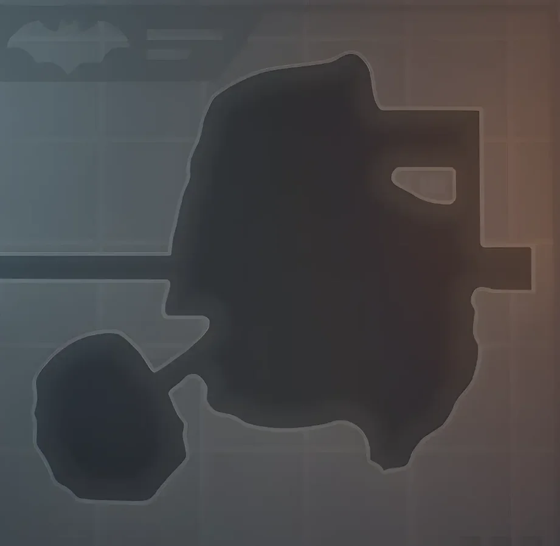

La isla Tricorner es la parte más al sur de Gotham y es la zona de inicio del juego. Avanza en la historia para desbloquear las otras islas.

La Isla Sur también es conocida como la Vieja Gotham por los juegos antiguos, y es la más grande de las cuatro islas. Está dividida en cinco distritos, incluido el Caldero, una zona tipo barrio marginal controlada por el crimen organizado.

La isla Norte está formada íntegramente por Amusement Mile, que alberga numerosos criminales y se ha convertido en su escondite, incluido el del Joker.

La isla Central alberga Robinson Park y Newtown. Robinson Park es un gran parque público compuesto por diferentes tipos de vegetación.

La Batcueva es el escondite y base central de operaciones de Batman y el resto de la Familia Murciélago.